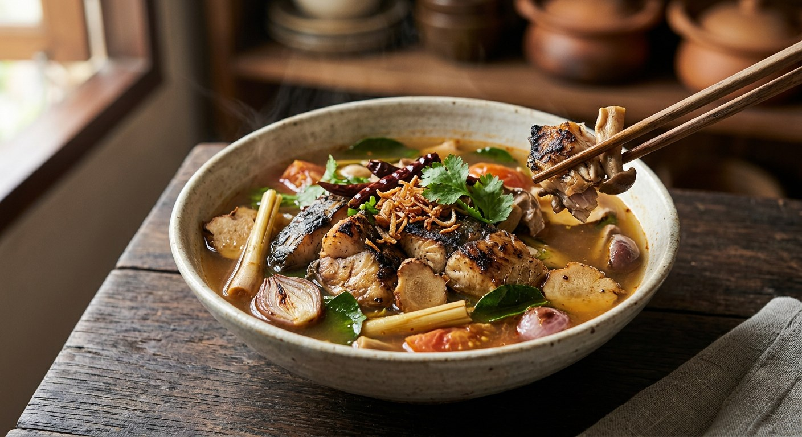

Tom yum's smoky older sibling: grilled fish simmered with dry-roasted galangal, lemongrass and shallots, soured with tamarind — no sugar, all smoke.

ต้มโคล้ง looks like tom yum and sounds like tom yum, and Aroifin says exactly that — but it leans salty and sour where tom yum leans sour and fragrant, and its whole character comes from what goes in the pot before the water: dried fish, crispy fish or grilled fish, plus herbs that have met fire. Every source roasts something. It is the difference between the two soups, and it is non-negotiable.
Pim's kitchen puts the comparison in a box: tom yum uses fresh herbs, klong uses roasted ones; tom yum sours with lime, klong with tamarind; tom yum's heat is fresh chillies and nam prik pao, klong's is roasted dried chillies plus crushed fresh ones; tom yum simmers fresh prawns and squid, klong simmers grilled or fried fish. Swap any one of those and you have made the other soup.
The tradition is older and stricter than the home versions. Aroifin's notes: the original broth was sour from tamarind, salty from salt — not fish sauce — and sweet only from the fish and the roasted shallots. No sugar, ever. Modern kitchens swapped in lime and fish sauce; the classics were barramundi, salted fish and tilapia. And the Pantip poster, planning a pot from two market-grilled fish bought at 60 baht each, wanted the old finishing touch — young tamarind leaves — but the tamarind trees hadn't sprouted, so lime at the end had to do. The soup survives because it bends.
| Thai | English | Amount |
|---|---|---|
| ปลาดุกย่าง | Grilled catfish, cut into large pieces | 1 |
| น้ำซุป | Stock | 3 cups |
| ข่า | Galangal | 4 slices |
| ตะไคร้ | Lemongrass | 1 stalk |
| ใบมะกรูดแก่ | Kaffir lime leaves, torn | 3 large |
| หอมแดง | Shallots, halved and bruised | 2 |
| มะเขือเทศ | Tomato | 1 (or 5 cherry) |
| เห็ด | Mushrooms (straw or shimeji) | 50 g |
| พริกแห้งเม็ดใหญ่คั่ว | Large dried chillies, roasted crisp | 2 |
| พริกขี้หนูสวนทุบ | Bird's eye chillies, crushed | 10 |
| มะขามเปียกแบบไม่มีเม็ด | Seedless tamarind | 15 g |
| น้ำปลา | Fish sauce | 3 tbsp |
| เกลือป่น | Salt | 1 tbsp |
| ผักชีฝรั่ง | Coriander, cut short | 1 sprig |
The snakehead version (Aroifin): 1 grilled snakehead, 3 tbsp fish sauce, 1 tsp salt, 2 ladles tamarind water, 1 cup roasted shallots, 1 cup sliced galangal, 1 small cup bruised lemongrass, 4–5 torn kaffir lime leaves, roasted dried chillies to taste, 1 small cup holy basil to finish — one serving, 449 kcal. The dried-fish version (Cookpad): 6 small dried fish, everything grilled first, a tom yum stock cube, 450 ml water, 1 tbsp tamarind water, ½ tbsp lime juice, 1½ tbsp fish sauce, ⅓ tsp palm sugar. The long simmer (Pantip): whole market-grilled fish simmered 25–30 minutes on medium-low with flower salt, then lime squeezed in last, off the heat.
The fish. Grilled catfish (Pim), grilled snakehead (Aroifin), small dried fish (Cookpad), crispy baked fish (Bloggang), any grilled fish from the market (Pantip). Aroifin lists the classics as barramundi, salted fish and tilapia. Klong is a method, not a fish — but it must be fish that has met fire.
Salt, fish sauce, or both. The tradition is salt alone (Aroifin). Pim uses both — 3 tablespoons of fish sauce plus a tablespoon of salt. Pantip reaches for flower salt, with fish sauce only for its aroma — or salt on its own. Cookpad runs on fish sauce and a stock cube.
Sugar. Aroifin is explicit: the traditional broth has none — the sweetness comes from the fish and the roasted shallots. Cookpad's third of a teaspoon of palm sugar is the only sugar in any of the five sources.
The sour. Pure tamarind (Pim, Aroifin), tamarind with lime squeezed in at the very end, off the heat (Pantip — it keeps the lime's aroma and stops bitterness), or lime-forward (Bloggang's crispy-fish version runs 3 tablespoons of lime to 2 of tamarind). Aroifin notes the modern swap to lime; Pantip still wishes for young tamarind leaves.
What gets roasted. Everyone roasts, but not the same things. Pim dry-roasts galangal, lemongrass, shallots and tomato in a pan; Pantip roasts the dried chillies, galangal, lemongrass and kaffir lime leaves; Cookpad grills everything, kaffir leaves and dried fish included; Aroifin roasts the shallots and the chillies. The fire is universal; the cast varies.
How long the fish swims. Pantip simmers whole market fish 25–30 minutes so the broth drinks the fish and the bones soften. Pim's opposite: don't boil long once the fish is in — it disintegrates. Aroifin and Bloggang add the fish, boil once, done.
The finish. Holy basil for Aroifin — a whole small cup stirred in off the heat — and ten leaves in Cookpad's boil. Coriander for Pim, Pantip, Cookpad's garnish and Bloggang. Two clear schools.
The liquid. Real stock (Pim), a tom yum stock cube (Cookpad), plain water (Aroifin, Bloggang). The cube is the hurry-up version; the traditional broth makes its own body.
This recipe is translated from the following Thai-language sources. Where they disagree, we've said so.
1. ครัวบ้านพิม (Pim) — "ต้มโคล้งปลาดุกย่าง" (the recipe used here, with the tom yum comparison) — pim.in.th
2. Aroifin — "วิธีทำต้มโคล้ง สูตรเด็ดหอมเครื่อง แซ่บซี๊ด เนื้อปลาหวาน" (the snakehead version and the traditional notes) — aroifin.com
3. Pantip — "วิธีทำ ต้มโคล้งปลาย่าง สูตร บ้านๆ จัดจ้านสะใจ!!" (the 25–30 minute simmer and the flower salt) — pantip.com
4. Cookpad — "ต้มโคล้งปลาแห้ง แซ่บมากกก" by im.mm (the dried-fish version and the stock cube) — cookpad.com
5. Bloggang — "ต้มโคล้งปลากรอบ" by lovebanana (the crispy-fish, lime-forward version) — bloggang.com